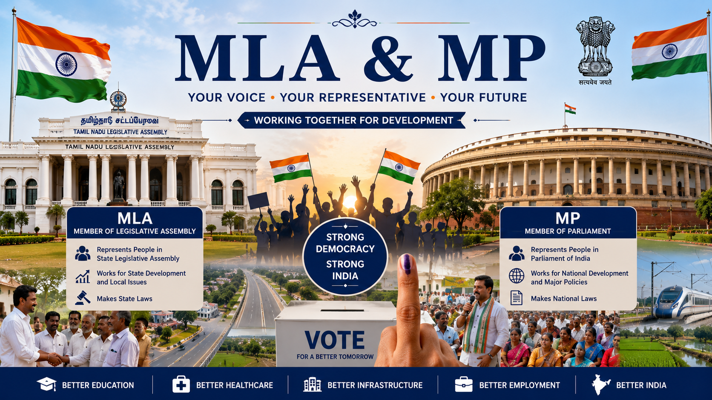

Did You Know?
The Indian Constitution provides every eligible citizen the right to vote. Through elections, people choose their representatives who work for public welfare and democratic governance.
Know about the important public representatives who work for the welfare and development of Madhuravoyal and the people of India.

An MLA (Member of Legislative Assembly) is an elected representative chosen by the people of a particular Assembly Constituency. The MLA represents the public in the State Legislative Assembly and works for the development of the constituency by addressing issues related to education, healthcare, roads, drinking water, employment, public welfare, and infrastructure.
The MLA discusses important state-level issues, participates in legislative debates, supports government policies, and ensures that public needs are presented before the State Government. They also monitor the implementation of various welfare schemes introduced by the Government of Tamil Nadu.
Citizens can approach their MLA to express concerns related to public services, infrastructure development, education, healthcare facilities, and other issues affecting the local community.
A Member of Parliament (MP) is elected by the people to represent a Parliamentary Constituency in the Lok Sabha, the lower house of the Parliament of India. MPs participate in national decision-making, pass laws, discuss national policies, approve budgets, and represent the interests of their constituency at the national level.
Members of Parliament play an important role in introducing development projects, improving national infrastructure, strengthening public welfare schemes, and ensuring balanced development throughout the country. They also contribute to debates on important issues related to the economy, education, healthcare, defence, agriculture, and technology.
The Mayor is the elected head of the Greater Chennai Corporation and plays a significant role in urban administration. The Mayor supervises civic development projects, public welfare programmes, environmental initiatives, sanitation services, road development, and overall city administration.
The Mayor works together with Corporation officials, Councillors, engineers, and government departments to improve the quality of life for citizens by ensuring better infrastructure and efficient delivery of public services.
A Councillor is an elected representative of a particular ward within the Greater Chennai Corporation. The Councillor serves as the direct link between citizens and the Corporation by addressing local issues such as drainage problems, road repairs, garbage collection, drinking water supply, street lighting, and maintenance of public parks.
Councillors regularly interact with residents, identify local issues, and coordinate with government departments to resolve them efficiently. They also encourage community participation in local development projects.
| Representative | Represents | Main Responsibility |
|---|---|---|
| MLA | Assembly Constituency | State Government Administration |
| MP | Parliamentary Constituency | National Government Administration |
| Mayor | City | Municipal Administration |
| Councillor | Ward | Local Civic Development |
The elected representatives of our country work together to improve the lives of citizens. Each representative has different responsibilities based on their level of government. They work for public welfare, development projects, education, healthcare, transportation, sanitation, employment opportunities, and infrastructure development.
They regularly meet government officials, listen to public grievances, propose development projects, allocate funds, and monitor the implementation of various welfare schemes. Their primary objective is to ensure that every citizen receives better public services and equal opportunities for growth.
Public representatives play an essential role in strengthening democracy. They act as a bridge between citizens and the government by communicating public needs, solving local problems, and implementing welfare schemes. Their leadership helps improve education, healthcare, transportation, environmental protection, employment opportunities, and overall social development.
Through regular interaction with the public, representatives identify the needs of different communities and work with government departments to provide effective solutions. Their efforts contribute to the economic growth and sustainable development of both the locality and the nation.
| Representative | Works At | Main Focus |
|---|---|---|
| MLA | State Assembly | State Development |
| MP | Parliament | National Development |
| Mayor | Corporation | City Administration |
| Councillor | Ward Office | Local Development |
The Indian Constitution provides every eligible citizen the right to vote. Through elections, people choose their representatives who work for public welfare and democratic governance.
This page provides educational information about the roles and responsibilities of public representatives in India. Students can understand how the MLA, MP, Mayor, and Councillor work together for the development of the country, state, city, and local community.